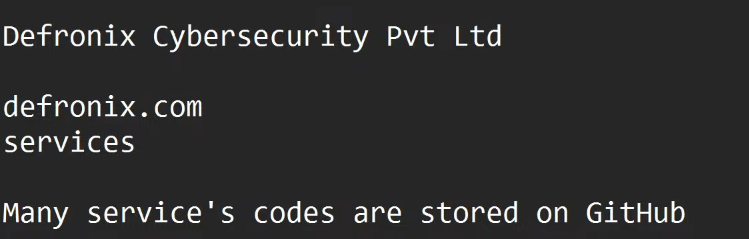

- two approach - 1. automated 2. manual (best)

- we can look for secret subdomains and some secret unique IP and credentials, LOG EMAIL, SPII in the github code
- we can find and follow the github developer to look and analyse his code and behaviour
- git dorker, git grabber, trufflehog - automation tools